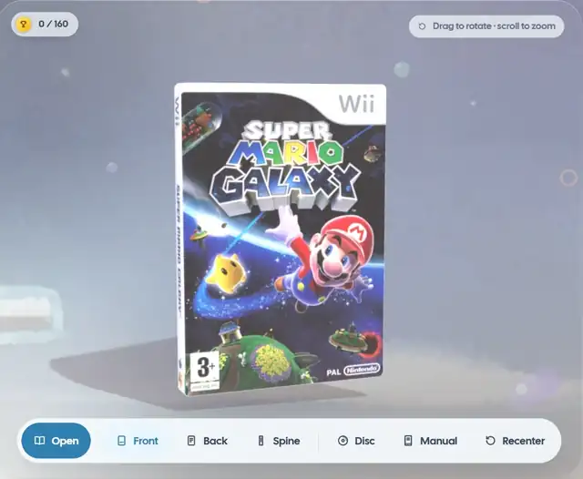
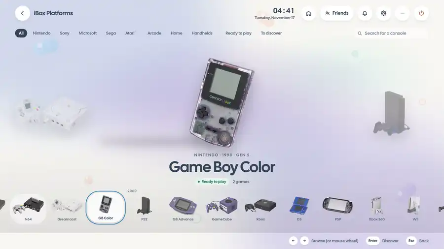

Consoles et PC réunis sur une étagère en 3D, avec leurs vraies jaquettes. iBox installe vos émulateurs, règle chaque jeu pour votre PC et vous laisse jouer à plusieurs, même à distance.
Télécharger iBox Aussi sur Steam Deck, en essai
Ajoutez vos dossiers : iBox trouve vos jeux, leurs jaquettes et leurs manuels, puis les lance avec le bon émulateur et les bons réglages.
Chaque console a ses vrais boîtiers. Ouvrez-les, retournez-les pour lire le dos, comme en magasin.
Émulateurs et boutiques PC (Steam, Epic, GOG, EA, Ubisoft, Xbox, Riot) au même endroit, à la manette.
Les émulateurs s'installent en un clic depuis leurs sources officielles ; iBox vous signale leurs nouvelles versions.
Des réglages d'émulateur adaptés à votre PC et à chaque jeu, avec sauvegarde et retour en arrière.
Invitez vos amis dans votre partie, jusqu'à six joueurs, en direct de PC à PC : l'image, le son et leurs manettes.
Chaque boîte contient son livret : le vrai manuel du jeu, à feuilleter page après page.
Une salle des trophées pour RetroAchievements et Steam, avec les succès annoncés pendant la partie.
Vos amis et ce à quoi ils jouent en direct, les messages, les invitations et la Communauté.
Rangez vos jeux comme vous voulez, suivez votre temps de jeu, choisissez thème et fond d'écran.

Éventail de boîtiers, grande image ou mosaïque, couleur, icône de franchise : chaque collection a son style. Posez-la où vous voulez et décorez l'accueil de logos, personnages et stickers animés.

Face, tranche, dos et galette sont récupérés automatiquement, ou choisis par vous. Ouvrez le boîtier : le disque et le livret sont à leur place.

iBox trouve le vrai manuel de vos jeux, ou prend le PDF de votre choix, et le glisse dans le boîtier. Feuilletez-le en double page, avec vignettes et zoom.

Choisissez une console : iBox Platforms télécharge l'émulateur recommandé depuis sa source officielle, vérifie le fichier et l'installe. iBox ne fournit jamais de jeux, de BIOS ni de clés.


De la NES à la Switch 2, et tous vos jeux PC.
La même bibliothèque, dans vos mains : une version Linux pensée pour le Mode Jeu, à la manette, en plein écran.

En Mode Bureau, téléchargez le fichier .AppImage et rangez-le dans un dossier, par exemple Applications.
Clic droit › Propriétés › Permissions : cochez Est exécutable, puis ouvrez iBox.
Quittez Steam, puis Paramètres › Système › Ajouter iBox à Steam. En Mode Jeu, iBox vous attend dans votre bibliothèque.
Encore réservé à Windows : héberger une partie Remote Play, l'overlay en jeu et les boutiques sans version Linux (EA, Ubisoft, Xbox, Battle.net). La version Steam Deck se met à jour toute seule, comme sous Windows.
Sans droits administrateur, en quelques secondes. Les mises à jour arrivent ensuite toutes seules.
Profil, dossiers de jeux, émulateurs, boutiques PC : l'assistant explique tout.
Choisissez un jeu sur l'étagère, iBox s'occupe du reste.
Au premier lancement, Windows peut afficher « Windows a protégé votre ordinateur », car iBox est encore un logiciel récent. Cliquez sur Informations complémentaires, puis sur Exécuter quand même.
iBox ne fournit ni jeux, ni BIOS, ni clés : utilisez vos propres copies, possédées légalement. Les émulateurs viennent de leurs sources officielles. iBox n'est affilié à aucun fabricant ; les marques citées appartiennent à leurs détenteurs.